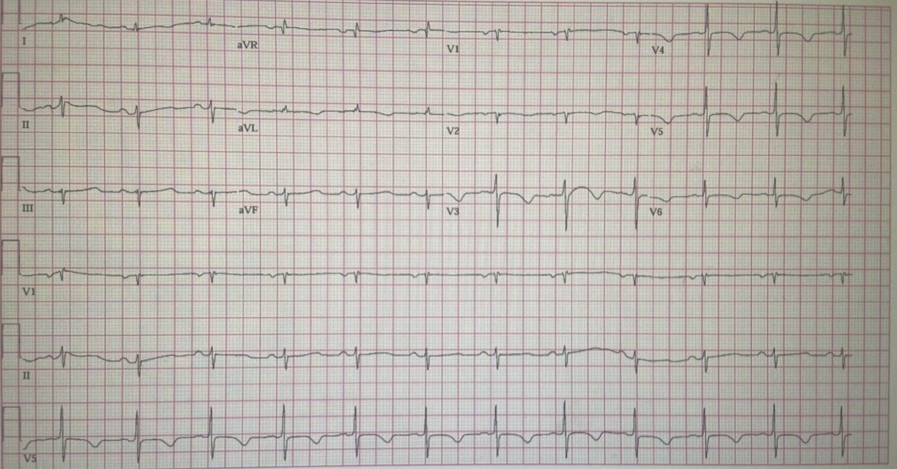
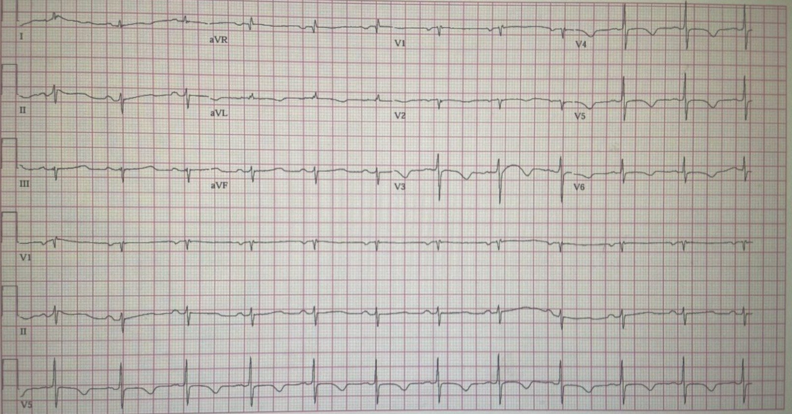
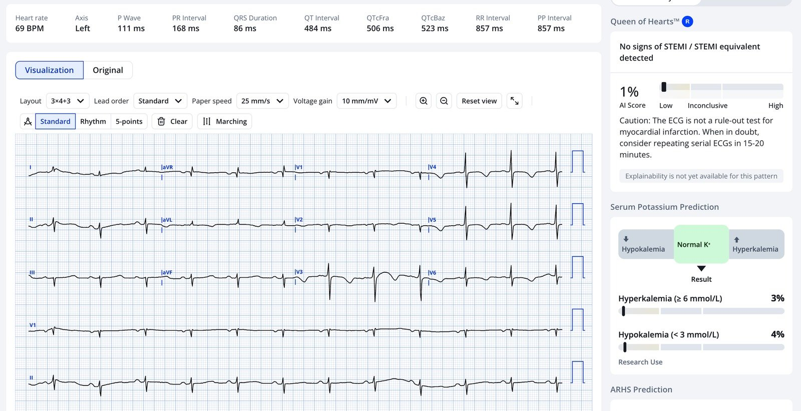
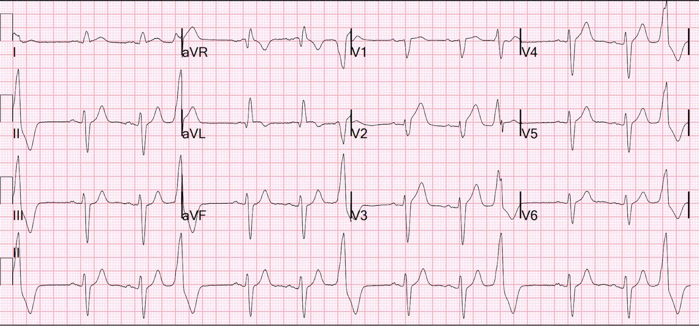
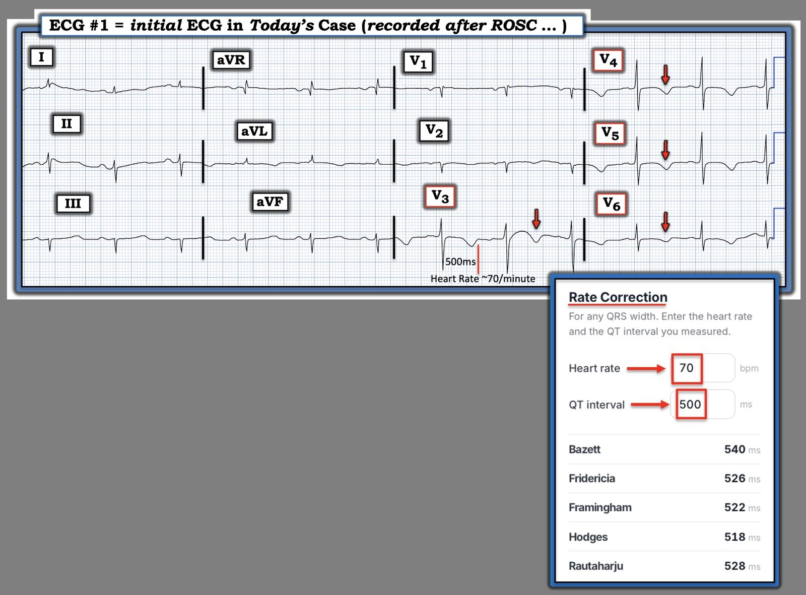

21/11/2026 — Nam 50 tuổi ngừng tim ngoài bệnh viện. Các hướng dẫn sẽ nói: đừng chụp mạch vành.
Bản dịch tiếng Việt của bài "50 yo male with out of hospital cardiac arrest. Guidelines would say don’t do an angiogram." – Dr. Smith’s ECG Blog. Giữ nguyên toàn bộ 4 hình ảnh của bản gốc.


Một nam giới 50 tuổi bị ngừng tim ngoài bệnh viện. Bệnh nhân được đặt ECMO lưu động nhanh (ECPR — hồi sinh tim phổi có hỗ trợ ECMO) vì không đạt tái lập tuần hoàn tự nhiên (ROSC) ban đầu. Không rõ liệu khử rung tuần tự kép (dual sequential defibrillation) có được sử dụng trước ECPR hay không.
Sau đó, bệnh nhân đạt ROSC và có điện tâm đồ này:


— Bạn nghĩ gì? —
= = =
Đây là chẩn đoán điện tâm đồ của AI PMcardio Queen of Hearts:


Cô ấy không thấy OMI đang diễn ra, cũng không thấy OMI đã tái tưới máu, và cũng không thấy thiếu máu cục bộ dưới nội tâm mạc. Và chắc chắn đây không phải là STEMI (OMI đáp ứng tiêu chuẩn STEMI)
Tôi cũng không thấy bất kỳ bằng chứng nào của OMI đang diễn ra, dù chắc chắn đây có thể là một OMI đã tái tưới máu.
Tại cơ sở của người gửi ca bệnh, mọi bệnh nhân đều được chụp mạch vành nếu được đặt ống thông ECMO (cannulation) vì ngừng tim do rung thất (VF).
Chụp mạch vành cho thấy tắc 100% động mạch mũ (TIMI-0). Động mạch đã được mở thông và đặt stent.
Bệnh nhân sống sót.
Những điểm cần học:
- Khoảng 10% các ca OMI đang diễn ra không có điện tâm đồ đủ để chẩn đoán OMI đang diễn ra. Luôn phải giữ mức độ nghi ngờ cao.
- Do các thử nghiệm COACT và TOMAHAWK có khiếm khuyết chết người (fatally flawed), các hướng dẫn không khuyến khích kích hoạt phòng thông tim khi không có các đặc điểm nguy cơ cao của NSTEMI. Ngay cả khi bệnh nhân có bằng chứng điện tâm đồ của OMI đang diễn ra (ca này thì không), nếu không đáp ứng tiêu chuẩn “STEMI” thì bệnh nhân không nên được chụp mạch vành.
- Thực ra các hướng dẫn có đưa ra ngoại lệ cho bệnh nhân đang chạy ECMO, nhưng điều đó nằm trong phần chữ nhỏ.
Xem bài này để đọc phần phê bình COACT và TOMAHAWK: Guidelines would (erroneously) say that this patient who was defibrillated and resuscitated does not need emergent angiography (Các hướng dẫn sẽ (sai lầm khi) nói rằng bệnh nhân đã được khử rung và hồi sức này không cần chụp mạch vành cấp cứu).
Tôi sẽ đưa điện tâm đồ của ca đó vào đây:


Một vài ghi chú về ECPR trong ngừng tim
ECPR (AV ECMO) trong ngừng tim vẫn còn gây tranh cãi. Một phản bác đối với tất cả các nghiên cứu là chúng không so sánh với khử rung tuần tự kép, mà chỉ so sánh với khử rung tiêu chuẩn. Điều đó bao gồm cả nghiên cứu gần đây nhất, vừa được công bố trong tháng này (xem bên dưới). Chắc chắn biện pháp này chỉ có thể thực hiện ở một số cơ sở chọn lọc được đào tạo bài bản, và rất tốn kém.
ECMO trước viện, công bố ngày 7 tháng Mười Một năm 2026 (link toàn văn):
Prehospital Extracorporeal Life Support in Refractory Out-of-Hospital Cardiac Arrest (Hỗ trợ sự sống ngoài cơ thể trước viện trong ngừng tim ngoài bệnh viện kháng trị)
Đây là phần tóm tắt từ Open Evidence:
ECPR (ECMO tĩnh mạch-động mạch [VA-ECMO] trong lúc đang hồi sinh tim phổi) cho rung thất kháng trị là một liệu pháp cứu vãn đã được công nhận nhưng có chọn lọc. Các hướng dẫn cho rằng biện pháp này hợp lý đối với những bệnh nhân được chọn lọc trong các hệ thống có kinh nghiệm, chứ không phải là chăm sóc thường quy. AHA đưa ra khuyến cáo Class 2a cho những bệnh nhân chọn lọc mà cơn ngừng tim có nguyên nhân có khả năng đảo ngược được. [1] Ngừng tim ngoài bệnh viện (OHCA) do VF/VT kháng trị là quần thể có bằng chứng mạnh nhất, nhưng các thử nghiệm ngẫu nhiên lại cho kết quả không thống nhất. [1-2] Đặt ống thông trước viện (tại hiện trường) vẫn còn đang trong giai đoạn nghiên cứu. Thực hành hiện nay chủ yếu dựa vào vận chuyển nhanh từ hiện trường đến khoa cấp cứu hoặc đến đội ECMO tại phòng thông tim.
Bằng chứng từ các thử nghiệm ngẫu nhiên (tất cả đều là OHCA)
- ARREST (một trung tâm, Minnesota, VF/VT kháng trị): kháng trị nghĩa là VF/VT vẫn tồn tại sau 3 lần sốc điện và amiodarone 300 mg, với thời gian vận chuyển dưới 30 phút. Bệnh nhân được đưa thẳng đến phòng thông tim để đặt ECMO và chụp mạch vành/PCI. Tỷ lệ sống sót đến khi ra viện là 43% so với 7%, và thử nghiệm được dừng sớm vì tính vượt trội. Các tác giả lưu ý rằng kết quả này phụ thuộc vào một trung tâm có số ca lớn và một hệ thống cấp cứu ngoài viện (EMS) đã được tái cấu trúc để đội ECMO có thể triển khai trong vòng khoảng 20 phút kể từ cuộc gọi 911. [1-3]
- Prague OHCA (một trung tâm, 264 bệnh nhân, mọi loại nhịp; khoảng 40% là nhịp không sốc được): sử dụng vận chuyển trong lúc ngừng tim, ECPR và đánh giá xâm lấn. Kết cục thần kinh thuận lợi tại thời điểm 180 ngày là 32% so với 22%, không có ý nghĩa thống kê, và thử nghiệm đã được dừng vì vô ích (futility). Trong một phân tích thứ cấp, những bệnh nhân có nhịp ban đầu là VF và những bệnh nhân không đạt ROSC tại hiện trường sau hồi sinh tim phổi kéo dài thì có được hưởng lợi. [1-2]
- INCEPTION (10 trung tâm ở Hà Lan với kinh nghiệm ECPR khác nhau, rối loạn nhịp thất ban đầu): tỷ lệ sống sót với thần kinh thuận lợi tại 30 ngày là 20% so với 16% (OR 1.4, KTC 95% 0.5–3.5). Thời gian đến khi đặt ECMO dài hơn và việc đặt ống thông thất bại thường xuyên hơn so với các thử nghiệm một trung tâm. [1-2]
- Dữ liệu gộp từ các RCT: kết cục thần kinh thuận lợi ngắn hạn cải thiện có ý nghĩa. Kết cục thần kinh và sống còn trung hạn chỉ cho thấy các xu hướng không có ý nghĩa, và chảy máu nặng tăng lên. [4]
= = =
======================================
BÌNH LUẬN CỦA TÔI, bởi KEN GRAUER, MD (21/11/2026 ):
Bệnh nhân trong ca hôm nay đã được hồi sức thành công sau OHCA (Ngừng tim ngoài bệnh viện). Bệnh nhân được đưa đến một cơ sở thực hiện thông tim cho tất cả những người sống sót sau OHCA. Kết quả thông tim cho thấy tắc 100% động mạch mũ (TIMI-0) — đã được đặt stent thành công, và bệnh nhân sống sót.
- Dù đã nói như trên — việc nhanh chóng đưa tất cả những người sống sót sau OHCA đến phòng thông tim không phải là thực hành tiêu chuẩn ở mọi cơ sở tại Hoa Kỳ. Lý do rất đơn giản: Làm như vậy không phải là vô hại. Với nhiều người, số phận có thể xảy ra là bệnh não do thiếu oxy (sự vô ích của điều trị) còn tệ hơn cái chết.
- Một cân nhắc khác nảy sinh khi đánh giá những bệnh nhân OHCA nào đạt ROSC (Tái lập tuần hoàn tự nhiên) thành công nhưng tình trạng thần kinh chưa chắc chắn — nên đủ điều kiện để được thông tim sớm. Đó là vì nhiều người sống sót sau OHCA được hồi sức tại các cơ sở không có sẵn dịch vụ thông tim 24/7/365. Điều này làm phức tạp việc ra quyết định, với các vấn đề vận chuyển tốn thời gian, khi cố gắng xác định những người sống sót sau OHCA nào có ít nhất một khả năng hợp lý đạt kết cục tốt.
= = =
Những bệnh nhân nào bị OHCA nên được đưa đi thông tim?
Trả lời câu hỏi những bệnh nhân đạt ROSC sau OHCA nào nên được đưa đến phòng thông tim là một thách thức. Chưa có sự đồng thuận chung. Tôi thấy những bài báo sau rất hữu ích:
- Tamis-Holland và cs. (Circulation 149(5), e274-295, 2024).
- Staer-Jensen và cs. (Circ: Cardiovasc Intervent 8(10), 2015).
= = =
Trước hết — một vài số liệu thống kê:
- OHCA là một nguyên nhân tử vong hàng đầu, chiếm ≈50% tất cả các biến cố tim mạch. Tiên lượng chung của các nạn nhân OHCA là kém — với dưới 10% sống sót đến khi ra viện.
- “Tin tốt hơn” — là tỷ lệ sống sót sau OHCA có thể tăng lên ~30%, nếu cơn ngừng tim đi kèm những thông số thuận lợi hợp lẽ thường. Tỷ lệ sống sót với kết cục thần kinh tốt là cao nhất ở những bệnh nhân OHCA: i) Biểu hiện bằng nhịp sốc được có người chứng kiến; — ii) Được hồi sinh tim phổi sớm do người xung quanh thực hiện; — iii) Đạt ROSC trong vòng 15 phút sau ngừng tim — và, iv) Có STEMI cấp trên điện tâm đồ đầu tiên ghi sau ROSC.
- Có sự đồng thuận rằng những người sống sót sau OHCA nhanh chóng tỉnh lại — và có điện tâm đồ đầu tiên cho thấy STEMI cấp — nên được đưa đến phòng thông tim. Nhưng khi không có các yếu tố tiên đoán thuận lợi này — thì chưa có sự đồng thuận. Và có những điểm cần thận trọng …
= = =
Những điểm cần thận trọng trong quá trình “Lựa chọn” …
- Điện tâm đồ đầu tiên sau ROSC không đáng tin cậy để phát hiện tất cả các bệnh nhân sau ngừng tim có khả năng được hưởng lợi từ tái tưới máu sớm. Đó là vì các dấu hiệu điện tâm đồ của thiếu máu cục bộ cấp không phải lúc nào cũng thấy được ngay — và có những điện tâm đồ dương tính giả …
- Điều này nhấn mạnh tầm quan trọng của Bệnh sử (nếu biết được bất kỳ thông tin bệnh sử nào tại thời điểm đánh giá bệnh nhân).
- Bệnh nhân có bệnh mạch vành đã biết không?
- Ngừng tim có người chứng kiến không?
- Hồi sinh tim phổi có được bắt đầu ngay không?
- Bệnh nhân có đau ngực trước khi gục xuống không?
- Ở những bệnh nhân không có ST chênh lên rõ rệt trên điện tâm đồ đầu tiên sau hồi sức — y văn báo cáo một khoảng rất rộng (3%–58%) về tỷ lệ những bệnh nhân có kết quả thông tim phù hợp với tắc mạch vành cấp.
- Điện tâm đồ ghi ngay sau ROSC thiếu độ đặc hiệu. Thời gian kể từ khi ngừng tim, và thời gian kể từ khi đạt ROSC, sẽ ảnh hưởng đáng kể đến độ tin cậy của điện tâm đồ thứ 1 sau ROSC trong việc phát hiện những bệnh nhân có nguyên nhân ngừng tim là tắc mạch vành cấp (tức là, Số chẩn đoán STEMI dương tính giả giảm dần khi càng chờ lâu trước khi ghi điện tâm đồ thứ 1 sau hồi sức — với thời điểm tối ưu phản ánh sự cân bằng giữa không muốn chờ quá lâu và không muốn có quá nhiều bản ghi dương tính giả).
- Dữ liệu quan sát gợi ý rằng chờ ~8 phút sau khi đạt ROSC có thể đạt được sự cân bằng tối ưu đó giữa việc giảm thiểu điện tâm đồ STEMI dương tính giả (do tưới máu mô kém vì tình trạng lưu lượng thấp thoáng qua) — mà không chờ “quá lâu” trước khi thông tim và PCI ở những người sống sót có OHCA thực sự do tắc mạch vành cấp gây ra (Baldi và cs. — JAMA NetwOpen 4(1):e2032875, 2021) — (2025 AHA Guidelines for Cardiopulmonary Resuscitation) — (Savastano và cs. — Resuscitation 192, 109971, 2023).
- Một cách khác — Có thể chọn ghi điện tâm đồ sau ROSC ngay khi khả thi, và ghi lại điện tâm đồ trong vòng vài phút nếu bản ghi đầu tiên cho thấy ST chênh lên (để giảm thiểu kết quả dương tính giả) — so với cách tiếp cận được chọn trong ca hôm nay là thông tim cho tất cả những người sống sót sau OHCA.
- Bản ghi STEMI dương tính giả đặc biệt thường gặp ở bệnh nhân tăng kali máu và/hoặc suy giảm ý thức (dĩ nhiên đây là những tình trạng thường đi kèm trong ngừng tim).
- Đánh giá thần kinh ban đầu sau ROSC nổi tiếng là không chính xác trong việc tiên đoán kết cục thần kinh sau cùng ở những người sống sót sau OHCA (tức là, Một số bệnh nhân cuối cùng vẫn hồi phục chức năng thần kinh bình thường hoặc gần bình thường, dù ban đầu có một giai đoạn không đáp ứng với các yếu tố tiên đoán thần kinh tưởng như là giai đoạn cuối, bao gồm giật cơ và mất phản xạ đồng tử).
- Do đó — Không nên dùng đánh giá thần kinh làm tiêu chí duy nhất cho các quyết định sớm về thông tim.
- Dù vậy — nhận biết các đặc điểm lâm sàng liên quan đến kết cục thần kinh kém có thể giúp ích khi cân nhắc toàn bộ quá trình ra quyết định (tức là, Các đặc điểm lâm sàng bất lợi này bao gồm tuổi cao, ngừng tim không có người chứng kiến, không có hồi sinh tim phổi do người xung quanh thực hiện, nhịp không sốc được khi đánh giá ban đầu, và thời gian ngừng tim kéo dài trước khi đạt ROSC).
- Siêu âm tim tại giường có thể giúp xác định những người sống sót sau OHCA bị tắc mạch vành cấp (tức là, nếu thấy rối loạn vận động thành khu trú) — và siêu âm tim có thể giúp xác định ~5% các ca ngừng tim do thuyên tắc phổi (PE) cấp khởi phát (tức là, nếu thấy thất phải giãn rõ). Dù vậy — độ nhạy và độ đặc hiệu chung của siêu âm tim tại giường còn hạn chế khi thực hiện ở những người sống sót sau OHCA.
- LƯU Ý: Một manh mối quan trọng cho thấy PE cấp là nguyên nhân của OHCA là nhịp trên điện tâm đồ lúc đến là hoạt động điện vô mạch (PEA) hoặc vô tâm thu.
- ĐIỀU CỐT LÕI: Việc tiên đoán những nạn nhân OHCA đạt ROSC nào cuối cùng sẽ sống sót với chức năng thần kinh thuận lợi vẫn là một khoa học chưa hoàn hảo. Nhưng — thông tim kịp thời kèm PCI ở những bệnh nhân thực sự có nguyên nhân ngừng tim là tắc mạch vành cấp (như trong ca hôm nay) — rõ ràng sẽ cứu được một số bệnh nhân được chọn lọc.
= = =
Áp dụng vào điện tâm đồ của ca hôm nay …
Để rõ ràng, trong Hình 1 — tôi đã đưa lại điện tâm đồ sau ROSC của ca hôm nay. Chúng ta không được biết đã bao lâu trôi qua từ khi đạt ROSC cho đến khi ghi bản ghi này.
- Nhịp trên điện tâm đồ #1 là nhịp xoang ~70 lần/phút.
- QTc kéo dài (Như thấy trong Hình 1 — Sử dụng công cụ tính QTc trực tuyến của chúng tôi giúp xác định QTc nhanh chóng).
- Sóng T đảo ngược sâu vừa phải, đối xứng thấy ở các chuyển đạo V3 đến V6 (mũi tên ĐỎ) — kèm sóng T đảo ngược kín đáo hơn cũng thấy ở các chuyển đạo bên cao I và aVL.
Suy nghĩ của tôi: Bản ghi sau ROSC này minh họa khó khăn vốn có khi đọc điện tâm đồ trong tình trạng lưu lượng thấp sau hồi sức ngừng tim.
- Bản ghi rõ ràng là không bình thường.
- Sóng T đảo ngược thấy ở nhiều chuyển đạo chắc chắn có thể phản ánh sóng T tái tưới máu .
- Nhưng — không có ST chênh lên …
Điều cốt lõi: Dù biết rằng chúng ta không rõ đã bao lâu trôi qua từ khi đạt ROSC cho đến khi ghi bản ghi hôm nay — ca này rõ ràng minh họa một ví dụ về lợi ích của việc thông tim kịp thời một cách thường quy ở những người sống sót sau OHCA được đánh giá là có tình trạng thần kinh còn khả năng cứu vãn.
= = =
Hình 1: Điện tâm đồ hôm nay — ghi sau ROSC.


= = =
= = =